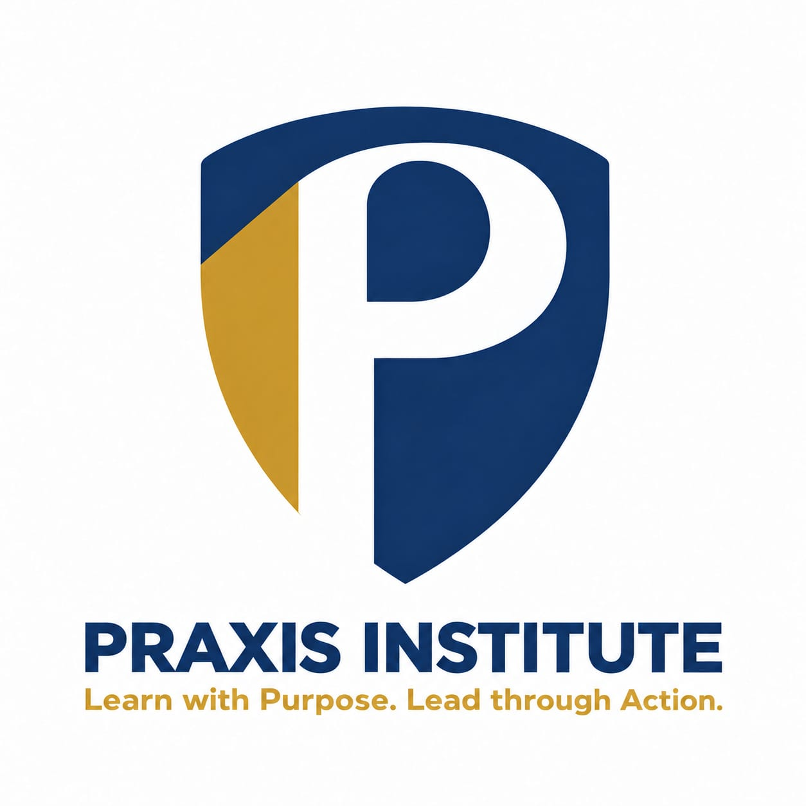

Executive Director
Praxis Institute for Leadership and Professional Excellence
2026 – Present
Patrick KakanyeroProfileLEADERSHIP · GOVERNANCE · PROFESSIONAL EXCELLENCE
Patrick is a Public Administrator, Director, mentor, and institutional leader with experience in management and governance. His leadership reflects a commitment to purpose, discipline, responsibility, accountability, and continuous learning. Patrick is passionate about developing competent professionals who lead ethically, serve with integrity, and put the public good first.

LEADERSHIP DEVELOPMENT & EXCELLENCE
My experience spans institutional management, governance, administration, mentorship, and professional development. I believe strong leadership is built on responsibility, accountability, continuous learning, and the ability to turn knowledge into practical action.
Praxis Institute for Leadership and Professional Excellence
2026 – PresentPrudential Assurance Uganda
2026 – PresentWatoto Church Ministries
2023 – PresentJimpak Uganda
2023 – 2026Watoto Church Ministries
2019 – 2026Patrick holds training and fellowship in:
PRAXIS INSTITUTE
LET’S CONNECT
Connect with me about: Leadership & Governance, Institutional Management, Stakeholder Engagement, Executive Support, Records & Information Management, Professional Development, mentorship, or collaboration. Reach me directly through any of the channels below.